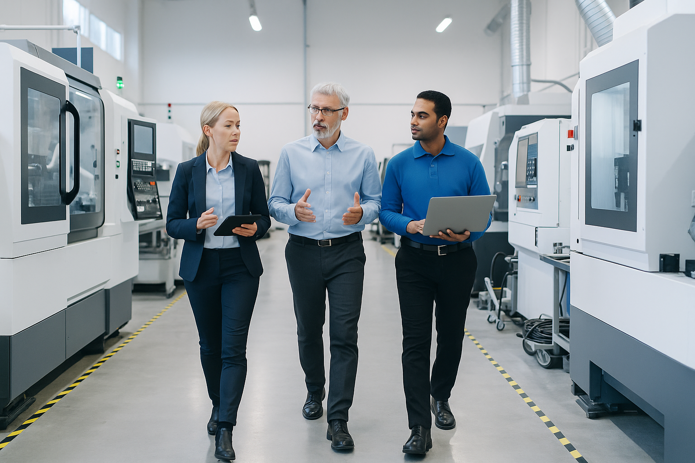

자동화 컨설팅
스마트 팩토리 구축부터 라인 자동화, 공정 개선까지
고객 맞춤형 자동화 전략을 제공합니다.

현장 맞춤형 자동화
현장 특성을 반영한 자동화 시스템 설계로 효율성과 안정성을 동시에 확보합니다.
- 라인 최적화 설계
- 자동화 수준 진단 및 개선
- 장비 간 인터페이스 분석
- 생산성 향상과 비용 절감 전략
SEBO SYSTEM
자동화 컨설팅 진행 프로세스
현장 진단
개선안 도출
자동화 설계
결과 보고

SEBO SYSTEM 의 차별화
단순 진단이 아닌 실현 가능한 전략 제시로 고객의 생산 환경을 혁신합니다.
- 다양한 산업군에서 축적된 프로젝트 경험
- 표준화된 절차 기반의 자동화 전략 수립
- 실행 가능성을 고려한 현장 중심 컨설팅
- 결과를 만드는 데이터 기반 분석과 전략 수립
SEBO SYSTEM 은 최신 설계 기술과 정밀한
엔지니어링으로
고객의 성공적인 프로젝트를 완성합니다.
“신뢰할 수 있는 자동화 파트너
SEBO SYSTEM은 실현 가능한 전략으로
함께합니다.”